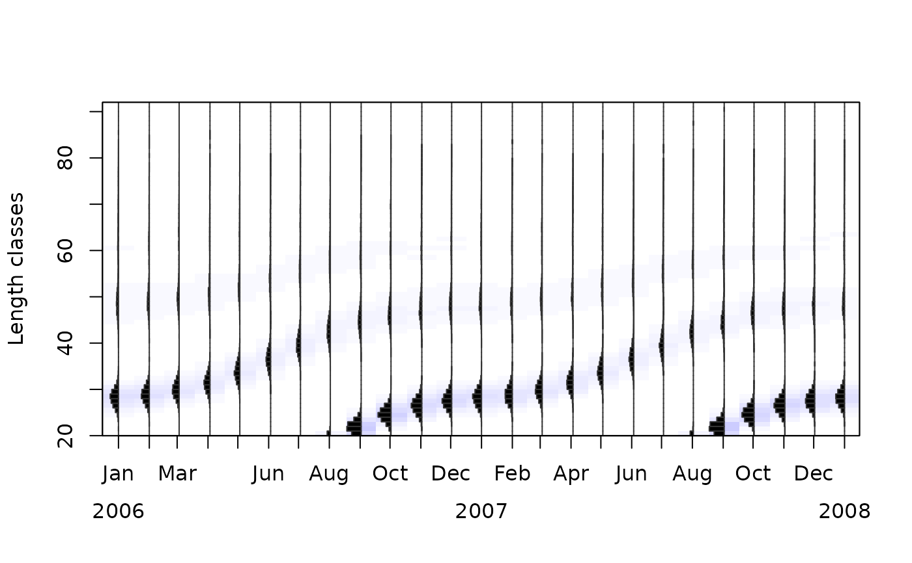
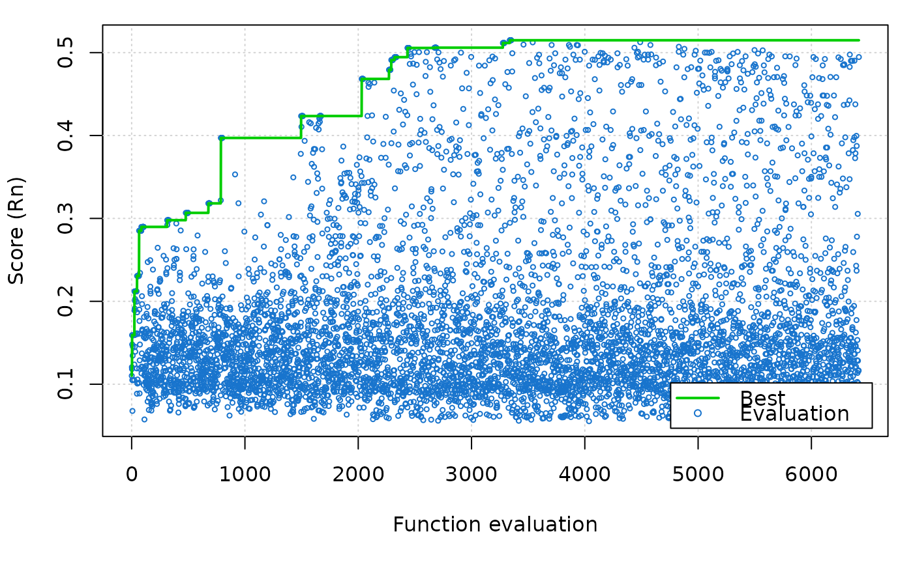
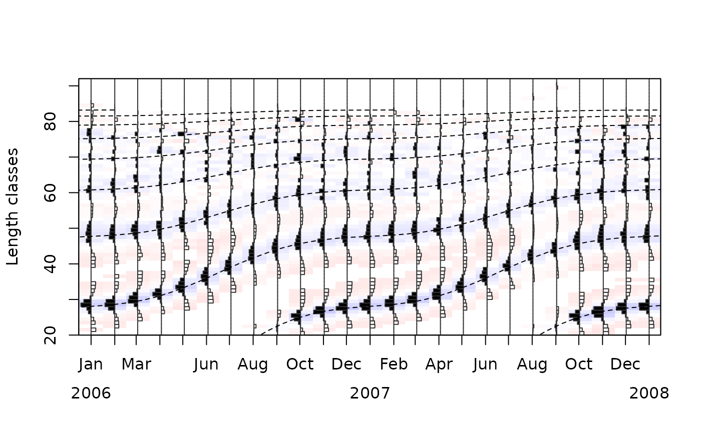
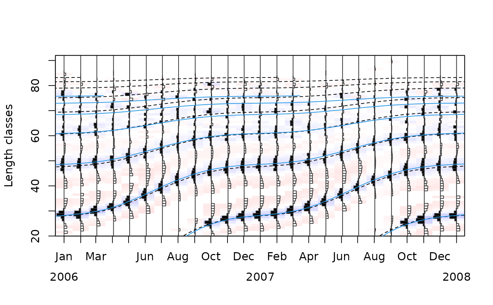

Electronic LEngth Frequency ANalysis with simulated annealing for estimating growth parameters.
Usage
ELEFAN_SA(
lfq,
seasonalised = FALSE,
init_par = list(Linf = 50, K = 0.5, t_anchor = 0.5, C = 0, ts = 0),
low_par = NULL,
up_par = NULL,
SA_time = 60 * 1,
maxit = NULL,
nb.stop.improvement = NULL,
SA_temp = 1e+05,
verbose = TRUE,
MA = 5,
addl.sqrt = FALSE,
agemax = NULL,
flagging.out = TRUE,
plot = FALSE,
plot.score = TRUE
)Arguments
- lfq
a list consisting of following parameters:
midLengths midpoints of the length classes,
dates dates of sampling times (class Date),
catch matrix with catches/counts per length class (row) and sampling date (column);
- seasonalised
logical; indicating if the seasonalised von Bertalanffy growth function should be applied (default: FALSE).
- init_par
a list providing the Initial values for the components to be optimized. When set to NULL the following default values are used:
Linf length infinity in cm (default is the maximum length class in the data),
K curving coefficient (default: 0.5),
t_anchor time point anchoring growth curves in year-length coordinate system, corrsponds to peak spawning month (range: 0 to 1, default: 0.5),
C amplitude of growth oscillation (range: 0 to 1, default: 0),
ts summer point (ts = WP - 0.5) (range: 0 to 1, default: 0);
- low_par
a list providing the lower bounds for components. When set to NULL the following default values are used:
Linf length infinity in cm (default is calculated from maximum length class in the data),
K curving coefficient (default: 0.01),
t_anchor time point anchoring growth curves in year-length coordinate system, corrsponds to peak spawning month (range: 0 to 1, default: 0),
C amplitude of growth oscillation (range: 0 to 1, default: 0),
ts summer point (ts = WP - 0.5) (range: 0 to 1, default: 0);
- up_par
a list providing the upper bounds for components. When set to NULL the following default values are used:
Linf length infinity in cm (default is calculated from maximum length class in the data),
K curving coefficient (default: 0.01),
t_anchor time point anchoring growth curves in year-length coordinate system, corrsponds to peak spawning month (range: 0 to 1, default: 0),
C amplitude of growth oscillation (range: 0 to 1, default: 0),
ts summer point (ts = WP - 0.5) (range: 0 to 1, default: 0);
- SA_time
numeric; Maximum running time in seconds (default : 60 * 1).
- maxit
Integer. Maximum number of iterations of the algorithm. Default is NULL.
- nb.stop.improvement
Integer. The program will stop when there is no any improvement in 'nb.stop.improvement' steps. Default is NULL
- SA_temp
numeric; Initial value for temperature (default : 1e5).
- verbose
logical; TRUE means that messages from the algorithm are shown (default : TRUE).
- MA
number indicating over how many length classes the moving average should be performed (defalut: 5, for more information see lfqRestructure).
- addl.sqrt
Passed to lfqRestructure. Applied an additional square-root transformation of positive values according to Brey et al. (1988). (default: FALSE, for more information see lfqRestructure).
- agemax
maximum age of species; default NULL, then estimated from Linf
- flagging.out
logical; passed to lfqFitCurves. Default is TRUE
- plot
logical; Plot restructured counts with fitted lines using
plot.lfqandlfqFitCurves(default : FALSE).- plot.score
logical; Plot simulated annealing score progression: the score (Rn) of each evaluation of the cost function and the best score so far (Default: plot.score=TRUE)
Value
A list with the input parameters and following list objects:
rcounts: restructured frequencies,
peaks_mat: matrix with positive peaks with distinct values,
ASP: available sum of peaks, sum of posititve peaks which could be potential be hit by growth curves,
ncohort: maximum age of species,
agemax: maximum age of species,
par: a list with the parameters of the von Bertalanffy growth function:
Linf: length infinity in cm,
K: curving coefficient;
t_anchor: time point anchoring growth curves in year-length coordinate system, corrsponds to peak spawning month,
C: amplitude of growth oscillation (if
seasonalised= TRUE),ts: summer point of oscillation (ts = WP - 0.5) (if
seasonalised= TRUE),phiL: growth performance index defined as phiL = log10(K) + 2 * log10(Linf);
Rn_max: highest score value (absolute value of cost function, comparable with ELEFAN and ELEFAN_GA).
Details
A more detailed description of the simulated annealing (SA) can be found in
Xiang et al. (2013). The score value cost_value is not comparable with
the score value of the other ELEFAN functions (ELEFAN or
ELEFAN_GA).
References
Brey, T., Soriano, M., and Pauly, D. 1988. Electronic length frequency analysis: a revised and expanded user's guide to ELEFAN 0, 1 and 2.
Pauly, D. and N. David, 1981. ELEFAN I, a BASIC program for the objective extraction of growth parameters from length-frequency data. Meeresforschung, 28(4):205-211
Xiang, Y., Gubian, S., Suomela, B., & Hoeng, J. (2013). Generalized simulated annealing for global optimization: the GenSA Package. R Journal, 5(1), 13-28.
Examples
# \donttest{
## synthetic lfq data example
data(synLFQ4)
plot(synLFQ4, Fname="catch")

# ELEFAN_SA (takes approximately 10 seconds; use a longer SA_time,
# e.g. several minutes, for a real analysis)
output <- ELEFAN_SA(synLFQ4, SA_time = 10, seasonalised = TRUE, MA = 11,
init_par = list(Linf = 75, K = 0.5, t_anchor = 0.5, C = 0.5, ts = 0.5),
low_par = list(Linf = 70, K = 0.3, t_anchor = 0, C = 0, ts = 0),
up_par = list(Linf = 90, K = 0.7, t_anchor = 1, C = 1, ts = 1))
#> Simulated annealing is running.
#> This will take approximately 0.17 minutes.
#> timeSpan = 10.001116 maxTime = 10
#> Emini is: -0.5149179199
#> xmini are:
#> 86.50771775 0.4101330356 0.1368551619 0.7761266884 0.4978404496
#> Totally it used 10.00116 secs
#> No. of function call is: 6419

output$par
#> $Linf
#> [1] 86.50772
#>
#> $K
#> [1] 0.410133
#>
#> $t_anchor
#> [1] 0.1368552
#>
#> $C
#> [1] 0.7761267
#>
#> $ts
#> [1] 0.4978404
#>
#> $phiL
#> [1] 3.487034
#>
output$Rn_max
#> [1] 0.5149179
# view fit
plot(output)

# or
plot(output, draw = FALSE)
lfqFitCurves(output, col=1, par=output$par, draw=TRUE)$ESP
#> [1] 80.45716
# compare to original parameters
tmp <- lfqFitCurves(output, col=4, lty=1,
par=list(Linf=80, K=0.5, t_anchor=0.25, C=0.75, ts=0.5), draw=TRUE)

tmp$fESP
#> [1] 0.45299
output$Rn_max
#> [1] 0.5149179
# }